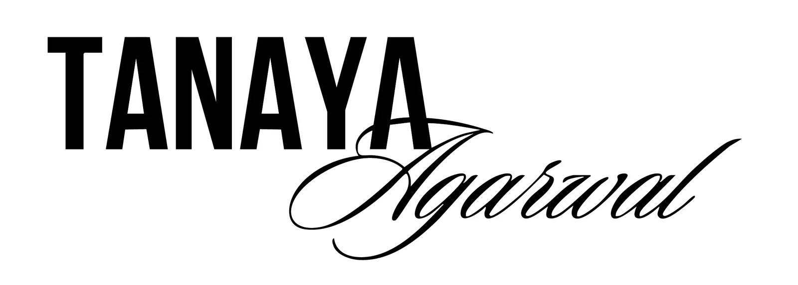
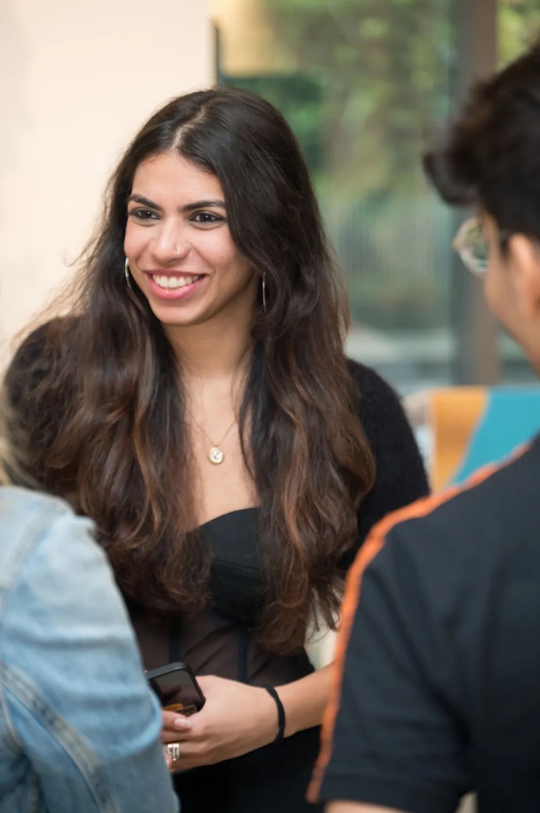

I’m a creative design student at Parsons School of Design, and my work spans branding, visual storytelling, digital content, and self-initiated ventures. My foundation is classical craft: a trained eye for composition, typography, and narrative that shows up whether I’m sketching by hand or directing a generative workflow.
For me, AI is an amplifier rather than an author. It lets me explore more directions, iterate faster, and push ideas further than traditional methods allow, while my instincts decide what’s worth keeping and every final choice remains mine. The result is work that moves at the speed of new tools without losing the intent, taste, and point of view behind it.
I’m drawn to design and creative technology roles that balance concept, strategy, and execution, with the long-term aim of becoming a creative director, and I collaborate easily across design, branding, and front-end-adjacent teams.
